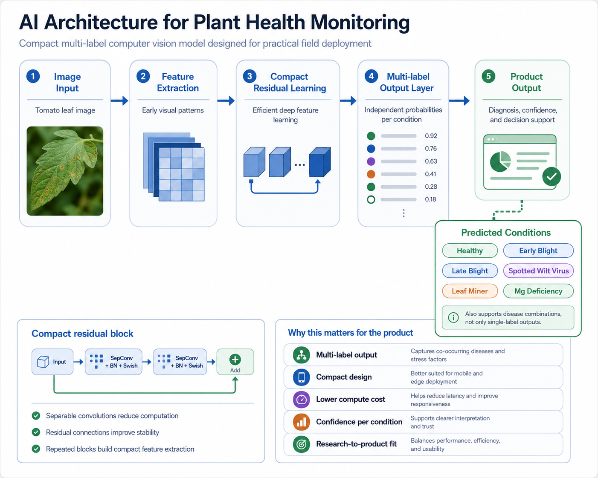
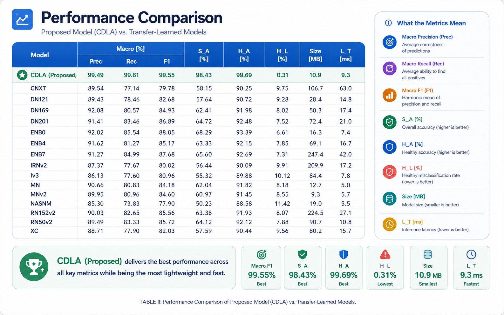
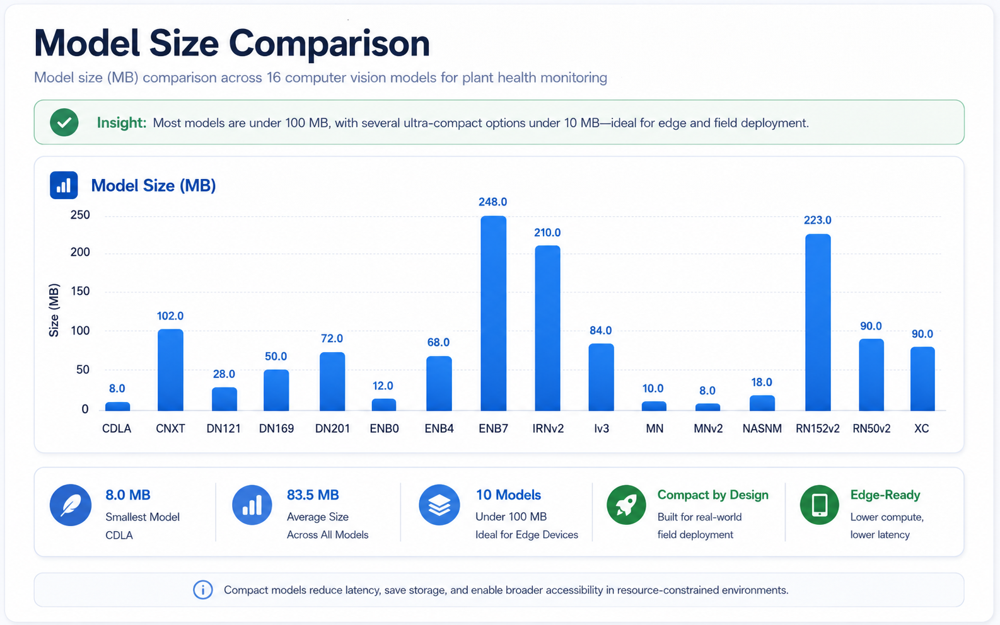
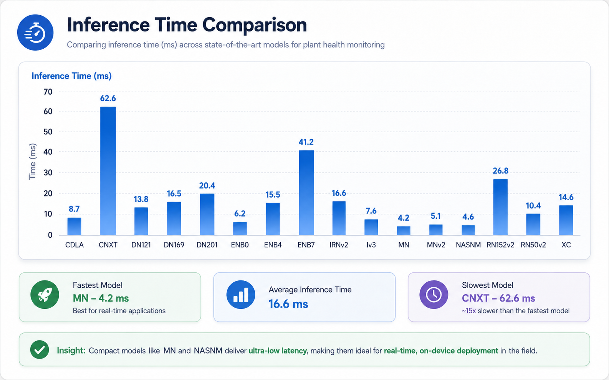
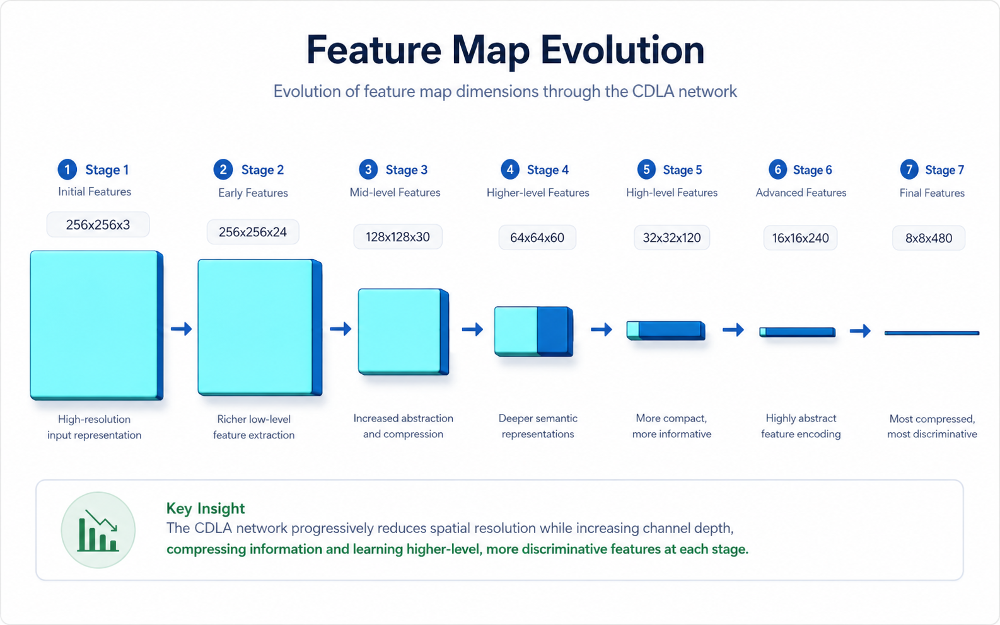

Farmers
Need fast, understandable plant health assessments that support earlier intervention and reduce losses.
Main product case study
A computer vision product case study based on doctoral research in multi-label plant disease detection. The platform is designed to support early plant disease diagnosis, object-level localization, affected-area analysis, and field-oriented crop health monitoring.
Overview
AI Plant Health Monitoring Platform is a product case study built on doctoral research in computer vision and plant disease detection. The research addresses multi-label classification of tomato leaf conditions, where a single image may contain multiple simultaneous issues such as fungal infection, viral disease, pest damage, or nutrient deficiency.
The product concept translates this research into a practical decision-support platform for farmers, agronomists, agri-tech companies, and agricultural researchers, while keeping the MVP focused and realistic.
My role
This case study is based on my doctoral research and product translation work. My contribution includes problem framing, dataset strategy, model evaluation, product positioning, MVP definition, roadmap design, AI risk analysis, and the translation of research results into a product-oriented case study.
The goal is not only to present a high-performing AI model, but to show how a research prototype can be shaped into a realistic AI product concept with users, metrics, risks, deployment constraints, and decision-support value.
Problem
Plant diseases and stress factors are often detected too late, when crop damage has already progressed. Manual inspection is time-consuming, subjective, and difficult to scale, especially when multiple symptoms appear on the same plant.
Many AI-based plant disease systems focus on single-label classification, assuming that each image contains only one disease or condition. In real agricultural settings, plants may suffer from multiple simultaneous problems, such as fungal infection combined with pest damage or nutrient deficiency.
This creates a product opportunity for an AI system that can detect multiple co-occurring conditions, communicate uncertainty, localize affected regions, and support faster field-level decision-making.
Users
Need fast, understandable plant health assessments that support earlier intervention and reduce losses.
Need structured evidence, confidence information, and visual support before making field-level recommendations.
Need reliable AI modules that can be integrated into monitoring platforms, drones, or agricultural equipment.
Need reproducible experiments, measurable metrics, and interpretable model behavior.
Personas
These personas keep the product focused on real decisions, not only on model outputs.
Needs reliable AI-assisted diagnosis, confidence information, and visual evidence before making field-level recommendations.
Needs fast field-level plant health assessment, simple reports, and early warnings to reduce crop losses.
Vision
The vision is to create a modular AI product that helps users detect plant diseases from images, localize affected plant regions with object detection, estimate disease severity, and generate monitoring reports for decision support.
The platform does not replace agronomists and does not prescribe automatic pesticide treatments. It provides AI-assisted decision support, confidence scores, visual evidence, and structured reports that can help experts act faster.
User journey
The product experience should be simple enough for field use, while still preserving expert validation and uncertainty communication.
The user captures or uploads a tomato leaf image.
The system analyzes the image using the multi-label AI model.
The user receives predicted conditions with confidence scores.
The product displays visual cues and a short diagnosis summary.
The user exports a report or requests expert validation.
Feedback is stored to improve future validation and monitoring.
Core capabilities
Product role: identifies whether the plant is healthy or affected by one or more conditions.
User value: fast initial diagnosis and triage.
Product role: localizes leaves, fruits, plants, or affected regions in complex images.
User value: more precise field monitoring, counting, and localization.
Product role: separates relevant plant areas or highlights affected regions.
User value: severity estimation and clearer visual evidence.
Product role: converts AI results into readable summaries and exportable reports.
User value: supports decisions, review, and communication.
Extended AI capabilities
The research roadmap includes object detection, segmentation, multispectral monitoring, and real-world field validation. In product terms, these capabilities expand the platform from image diagnosis toward continuous crop monitoring.
Object detection enables the product to localize affected plant regions instead of only predicting that a disease is present. It can also support fruit counting, yield estimation, and future integration with agricultural robots or drone-based monitoring.
Segmentation can isolate leaves or affected areas from complex backgrounds, supporting more precise severity estimation and potentially improving classification performance as a preprocessing or meta-model stage.
Multispectral drone imagery can extend the product beyond visible symptoms by using vegetation indices and field-level analysis. Related work on multispectral U-Net semantic segmentation supports weed/crop/background mapping and broader crop health monitoring.
Research foundation
The technical foundation of this product concept is doctoral research on compact deep learning architectures for multi-label plant disease classification. The research focuses on tomato leaf images and addresses the challenge of identifying multiple simultaneous conditions on the same leaf.
The proposed CDLA model uses depthwise separable convolutions and residual connections to balance high classification performance with low computational cost. This makes it suitable for real-time or edge-oriented deployment scenarios.
Related publications
This product case study is connected to doctoral research and related scientific publications on compact CNN architectures for tomato plant disease detection, multi-label plant health classification, and multispectral semantic weed mapping.
Springer SOCO 2026 · Latest
Latest related work on semantic segmentation for weed/crop/background mapping using multispectral UAV imagery. It supports the platform direction toward multispectral monitoring and field-level crop analysis.
IEEE ICE/ITMC 2025
Core research foundation for the multi-label classification component used in this product case study.
Springer SOCO 2024
Related work on efficient CNN architectures for tomato plant disease and pest classification.
IEEE ICE/ITMC 2024
Related work on CNN-based tomato disease classification and early research validation.
MVP
The MVP focuses on validating the core product value: can users upload a plant image, receive a reliable AI-assisted diagnosis, understand the confidence of the prediction, and use the result as decision-support information?
Prioritization
| Feature | Priority | Reason |
|---|---|---|
| Image upload | Must | Required input for the product. |
| Multi-label disease classification | Must | Core product value. |
| Confidence score | Must | Helps users interpret prediction reliability. |
| Result summary | Must | Makes model output understandable. |
| Visual explanation | Should | Increases user trust. |
| Expert feedback | Should | Improves validation and future model improvement. |
| Segmentation of affected regions | Should | Supports severity estimation. |
| Object detection | Could | Useful for localization, fruit counting, and field monitoring, but not required for the first MVP. |
| Drone/GIS integration | Could | Valuable later, but too complex for MVP. |
| Automatic treatment prescription | Won’t for now | High risk; requires expert validation and regulatory caution. |
Roadmap
Image upload, multi-label disease classification, confidence score, and result summary.
Visual explanations, affected-region analysis, expert feedback, and uncertainty communication.
Object detection, segmentation, severity estimation, fruit/plant counting, and multi-image analysis.
Structured reports, trend analysis, agronomist validation workflow, and farm-level monitoring.
Web/mobile interface, edge deployment evaluation, security, scalability, and real-world field validation.
Metrics
Activation rate, completed analyses, repeat usage, time to result, user trust score, expert agreement rate, report export rate.
Macro F1-score, subset accuracy, Hamming accuracy, Hamming loss, per-class recall, confusion matrix, mAP for object detection, IoU/Dice for segmentation.
Model size, inference time, memory footprint, deployment feasibility on mobile or embedded devices.
False negative rate, overconfidence rate, performance drop on real-world images, dataset bias.
In the research prototype, the CDLA model achieved approximately 99.55% macro F1-score, 98.43% subset accuracy, 99.69% Hamming accuracy, 0.31% Hamming loss, a model size of approximately 10.9 MB, and an average inference time of approximately 9.3 ms per image.
Product interpretation: CDLA provides a strong accuracy-efficiency trade-off, making it more suitable for practical plant health monitoring than large generic models that may be accurate but heavier to deploy.
Evidence
These results support the product feasibility hypothesis: a compact, task-specific model can provide high-quality multi-label diagnosis while remaining small and fast enough for practical deployment. The strongest message is not that CDLA is always the absolute smallest or fastest model, but that it offers the best overall balance between accuracy, compactness, and deployment feasibility.






Risk management
| Risk | Product impact | Mitigation |
|---|---|---|
| False negative diagnosis | Diseased plants may be missed. | Confidence thresholds, expert review, conservative reporting. |
| False positive diagnosis | Unnecessary treatment costs. | Explainability, confirmation workflow, expert validation. |
| Dataset bias | Poor performance outside training conditions. | Field data collection, external validation, continuous evaluation. |
| Overconfidence | Users may overtrust wrong predictions. | Calibration, uncertainty display, warning messages. |
| Real-world variability | Lighting, background, camera quality, and plant variety may affect results. | Data augmentation, field testing, robust preprocessing. |
| Misuse of recommendations | Users may treat AI output as expert advice. | Decision-support framing; no automatic treatment prescriptions. |
Learnings
This case study shows that AI product value does not come only from model accuracy. For real deployment, accuracy must be balanced with model size, inference time, interpretability, user trust, data quality, and operational risk.
The most important product trade-off is between model complexity and deployability. Large transfer-learned models can be powerful, but they may be too heavy for mobile or field scenarios. A compact task-specific architecture can offer a better balance when the product goal is practical deployment, not only benchmark performance.
Another key learning is that multi-label classification is more realistic than single-label diagnosis for plant health monitoring, but it also increases the need for careful metrics, expert validation, and clear communication of uncertainty.